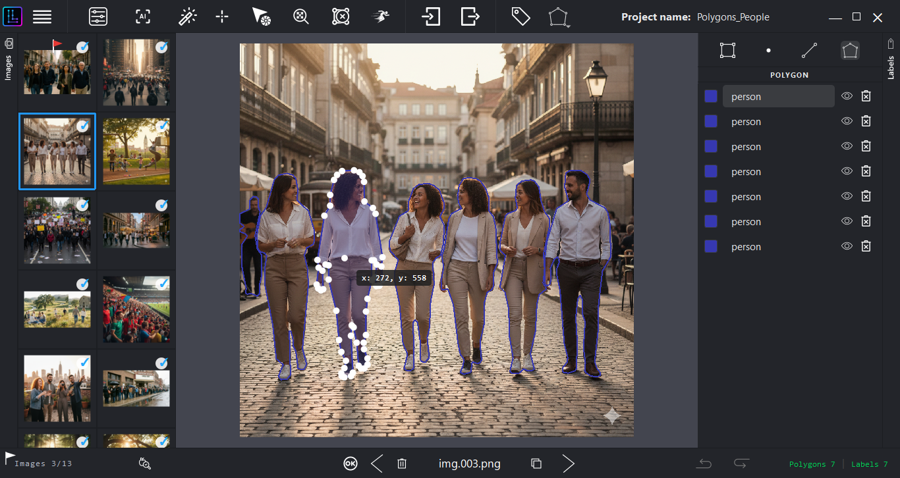

An architecture designed for stability on resource constrained systems. LensLaber allows you to manage complex projects without compromising data integrity, ensuring a reliable, local workflow.
100%
Offline operation
0
Telemetry events
20,000+
Images validated
600–900MB
Typical RAM footprint
Figures reflect the current beta. License activation in the final release will require a one-time online check.

Running YOLO + MobileSAM on CPU-only hardware from 2015 is impressive engineering. The offline-first design is smart for domains like medical imaging, manufacturing QC, or anything with data sovereignty constraints where cloud upload is a non-starter.
Harry Ratcliffe
AI Accelerator Institute — commenting on LinkedIn
LensLaber is closed-source, but nothing about how it's verified should be. Every release is independently checkable before it touches your machine.
No anonymous publisher. The creator is reachable directly, with a public track record.
Both installers are scanned live on VirusTotal, with reports hosted on their own servers, not ours.
Every download ships with its SHA-256 hash, so you can confirm the file wasn't altered or corrupted in transit.
View checksums below ↓Note: as an independent beta release, the Windows installer doesn't yet carry a commercial EV Code Signing Certificate, so SmartScreen may show an "Unknown Publisher" warning. Click "More info" → "Run anyway" to proceed.
SHA-256 Checksum
348c7770e69bc0c4ee132a322c588f917bf8f59f699f8c711e14c8a90a701b59
Security Report (0/56)
SHA-256 Checksum
13bd97751a93d8bb9157d595dca2b18b7ff6f061296249780e4db88dc88a21d6
Security Report (0/62)
Note: Software is currently self-published and unsigned. You may see installation prompts from your OS.
By downloading LensLaber you agree to our Terms of Use. This is a beta release: use at your own risk and keep independent backups of your data. The software collects no personal data. See our Privacy Policy.
Beta Program Details
This beta version includes a 30-day usage limit per installation to ensure you are always running the latest version.
Reward: Active beta testers who provide consistent, constructive feedback will receive a free commercial license upon final release.
LensLaber is built on a CPU-first architecture for native compatibility with low-end hardware.
Validated on 20,000+ images. Ensures consistent memory footprint (600–900 MB) and stable CPU utilization for long-duration annotation sessions.
Common questions before evaluating LensLaber for your workflow.
No. The current beta runs 100% offline with zero telemetry — your images and annotations never leave your machine, and the 30-day usage window is checked locally. The future commercial release will require a one-time online check to validate your license; annotation data itself will still never be uploaded.
As an independent beta release, the installer doesn't yet carry a commercial EV Code Signing Certificate, so SmartScreen shows an "Unknown Publisher" prompt. Click "More info" → "Run anyway" to continue. The binary is independently verifiable via VirusTotal and SHA-256.
You'll need to install the latest beta build to keep using LensLaber — this check happens locally, with no server involved. Testers who provide consistent, constructive feedback during the beta receive a free commercial license at final release, at which point a one-time online activation will be required.
Yes. The detection engine is fully agnostic — load any YOLO model in ONNX format to keep full control over your own weights.
LensLaber is proprietary software. The GitHub repository is used for binary distribution and documentation, not source access. Developer identity, scan reports, and checksums are fully public for independent verification.